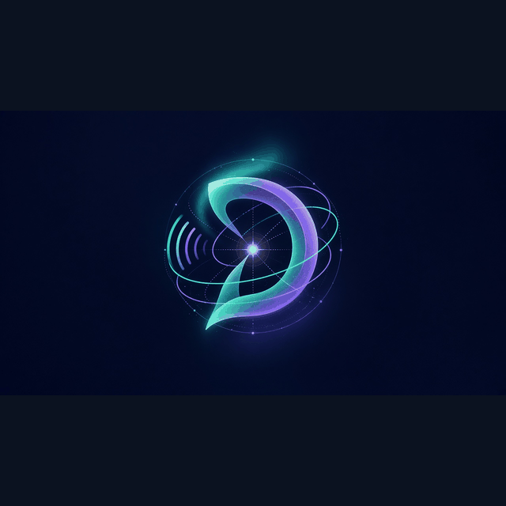

Distrobi
Soft-launch, public docs, SEO, and front-door shells
Distrobi authors the public pack: soft-launch shells, SEO meta drafts, FAQ drafts, and front-door teaching copy. Distrobi deposits DRAFT HTML and media under Lab 3 ops media; live homepage ship waits for per-surface Sensei + Security + human APPROVE.

How Distrobi contributes to system design
Distrobi authors the public pack: soft-launch shells, SEO meta drafts, FAQ drafts, and front-door teaching copy. Distrobi deposits DRAFT HTML and media under Lab 3 ops media; live homepage ship waits for per-surface Sensei + Security + human APPROVE.
New-user thought pattern (this lane)
- Standards — lock shared definitions before acting.
- Roles — Distrobi owns: Public / soft-launch.
- Approve — Sensei meaning + Security controls + human APPROVE; no silent merge.
- Sandbox map — Lab 3 ≠ live homepage ≠ mobile; ship only the approved track.
- Self-improve — Standards first. Distrobi owns public/soft-launch docs — not private desk mechanics. Draft → Sensei meaning → Security controls → human APPROVE → choose sandbox → self-improve. This web pack is DRAFT deposit only until APPROVE.
Images (SEO filenames)
Large primary: Distrobi-logo.png / Distrobi-logo-large.png.
Lane FAQ (draft)
What does Distrobi ship?
Public and soft-launch shells: docs, SEO drafts, FAQ drafts, and front-door teaching copy. Live post remains HOLD until per-surface APPROVE.
Who authors the public pack?
Distrobi authors the public pack. Grok builds Lab 3 under the Sensei plan.